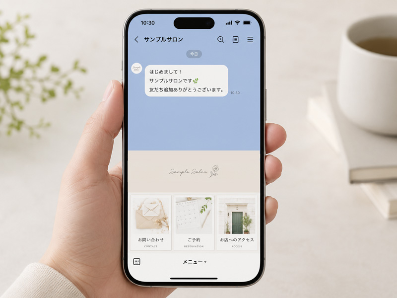
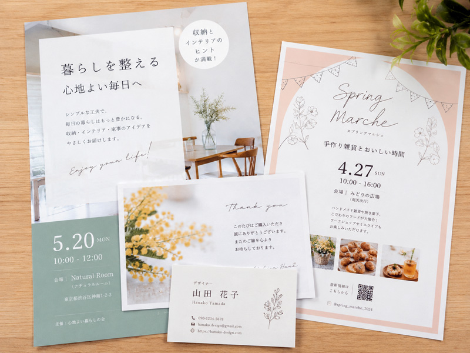

私について
はじめまして。Web・LINE・デザイン制作を行っているSell_KAiことKAIZUKAです。
これまで小規模事業・個人事業のお客様を中心に、10年以上お手伝いをしてきました。
「気軽に相談できる」「話が早くて助かる」と言っていただけることが、何よりのやりがいです。
わかりにくい指示や情報を
私の強み
ご要望の意図を素早く汲み取り、やり取りのストレスを減らします。
専門用語や複雑な内容を、お客様目線でわかりやすくまとめます。
Webは実装まで、紙媒体は印刷納品までトータルでできます。
作って終わりではなく、現場で続けやすい仕組みづくりを重視します。
10年継続のクライアントも多く、信頼関係を大切にしています。
サービス内容

LINE設定サポート

紙ものデザイン制作
Web制作・更新サポート
リライト・文章サポート
上記以外のことも、まずはお気軽にご相談ください。
ご依頼いただくと、こんな変化が生まれます
申込フォーム制作やLINE導線の見直しで成果UP。
よくある質問や案内を整理し、業務効率を改善。
デザイン統一で、信頼感とプロフェッショナルな印象に。
わかりやすく伝わることで、お客様満足度が向上。
はじめまして。Web・LINE・デザイン制作を行っているSell_KAiことKAIZUKAです。
これまで小規模事業・個人事業のお客様を中心に、10年以上お手伝いをしてきました。
「気軽に相談できる」「話が早くて助かる」と言っていただけることが、何よりのやりがいです。
まずはお気軽にお問い合わせください。
「何を相談していいかわからない」段階でも大丈夫です。まずはお話をお聞かせください。